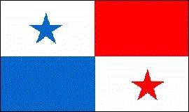
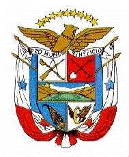

Panamá
|  |  |
Información general
Nombre oficial: República de Panamá
Área: 75 517 km²
Costas: 2 490 km
División política:9 Provincias y 2 comarcas indígenas
Provincia Capital
- Bocas del Toro Bocas del Toro
- Coclé Penonomé
- Colón Colón
- Chiriquí David
- Darién La Palma
- Herrera Chitré
- Los Santos Las Tablas
- Panamá Ciudad de Panamá
- Veraguas Santiago
Unidad monetaria: Balboa
1 Balboa = 100 centésimos
Idiomas: Español (oficial); se hablan los dialectos cuna, chocoe y guaymí en las comarcas indígenas; e inglés (no oficiales)
Fiesta nacional: 3 de noviembre, Separación de Panamá de Colombia
Gentilicio: Panameño
Hora oficial: GMT -5 horas (normal/verano)
Miembro de: ONU, OEA, ALADI (observador), MCCA (observador)
Curiosidades
El Canal de Panamá permite la comunicación acuática entre los dos grandes océanos del mundo. La inmensa selva en el Darién impide la comunicación terrestre entre América del Norte y América del Sur y la Carretera Panamericana se interrumpe en la ciudad de Yaviza, en la provincia del Darién.
Las obras para la construcción del canal de Panamá se iniciaron en 1908 y concluyeron en 1914. Anteriormente en 1789 Francia había ganado la concesión para la construcción del Canal a través del istmo de Panamá, pero esta empresa fracasó 10 años más tarde.
Información adicional en Internet.
Perfil Ecónomico
Perfil Demográfico
Población: 2.839.177 hab.
Densidad de población: 38,4 hab/km²
Fuente http://www.contraloria.gob.pa/dec/
Perfil Cultural
Alfabetismo: 92 %
Religión:
- Católicos: 82,3%
- Protestantes: 5,0%
- Musulmanes: 4,5%
- No religiosos: 3,3%
- Anglicanos: 1,1%
- Budistas: 0,1%
- Judíos: 0,1%
- Ortodoxos: 0,1%
- Otros: 3,5%
Algunas figuras notables:
- Joaquín Beleño (1921). Novelista
- Roque Cordero (1927). Compositor y director de orquesta
- Alberto Galimany (1889). Músico
- Narciso Garay (1876-1953). Músico
- Darío Herrera (1869-1914). Poeta y escritor
- Amelia Denis de Icaza (1836-1910). Poetisa y escritora
- Ricardo Miró (1883-1940). Poeta y escritor
- Salomón Ponce Aguilera (1868-1945). Escritor
- Rogelio Sinán (1904). Poeta y escritor
Lugares declarados patrimonio mundial por la UNESCO
- Reservas de la Cordillera de Talamanca-La Amistad (compartido con Costa Rica).
- Parque Nacional Darién.
- Fortificaciones de Portobelo y San Lorenzo.
Sistema de Gobierno
Constitución vigente: 11 de octubre de 1972 (enmendada el 24 de abril de 1983)
Sistema ejecutivo: Presidente y dos Vicepresidentes (elegidos por sufragio universal directo para un período de cinco años), gabinete de doce ministros.
Sistema legislativo: Asamblea Legislativa (setenta y dos miembros elegidos por cinco años).
Sistema judicial: Corte Suprema de Justicia (nueve magistrados nombrados por el gabinete y aprobados por la Asamblea Legislativa por un período de diez años), cinco Tribunales Superiores de Distrito Judicial con diecinueve magistrados y juzgados de circuitos y municipales.
Gobierno subdivisional: Las provincias se dividen en distritos (67) y corregimientos (510). Están encabezados por un Gobernador, nombrado por el Presidente y un Consejo Municipal integrado por los representantes de los corregimientos.
Aproximación histórica
Panamá se encuentra en el istmo que une a América Central con la del Sur, limitando con Costa Rica por el oeste y con Colombia por el este.
Los españoles llegaron a la región en 1501. En 1821 se incorpora con el nombre de Departamento del Istmo a la Gran Colombia.
En 1879 una empresa francesa dirigida por Ferdinand de Lesseps gana la concesión para construir un canal a través del istmo. Mala administración, la fiebre amarilla y la malaria provocan la muerte de 22 000 trabajadores y el fracaso de la empresa 10 años después.
En 1903 después de que el Senado de Colombia desaprueba el tratado para la construcción del canal, Estados Unidos estimula una rebelión separatista y adquiere el derecho para el control perpetuo del canal, cuyas obras se inician en 1908 y concluyen en 1914.
Estados Unidos renuncia a la soberanía perpetua sobre el Canal en 1974 y en 1977 el entonces presidente norteamericano Jimmy Carter firma el tratado por el cual el Canal y sus instalaciones pasarán al control de los panameños en el año 2000.
Panamá está dividido en dos planicies selváticas, una estrecha hacia el Atlántico y otra más ancha, con zonas de sabana, hacia el Pacífico.
En la economía panameña desempeña un papel fundamental los servicios a la zona del Canal y la actividad comercial en la Zona Libre de Colón.
«-- ir al comienzo
«-- regresar